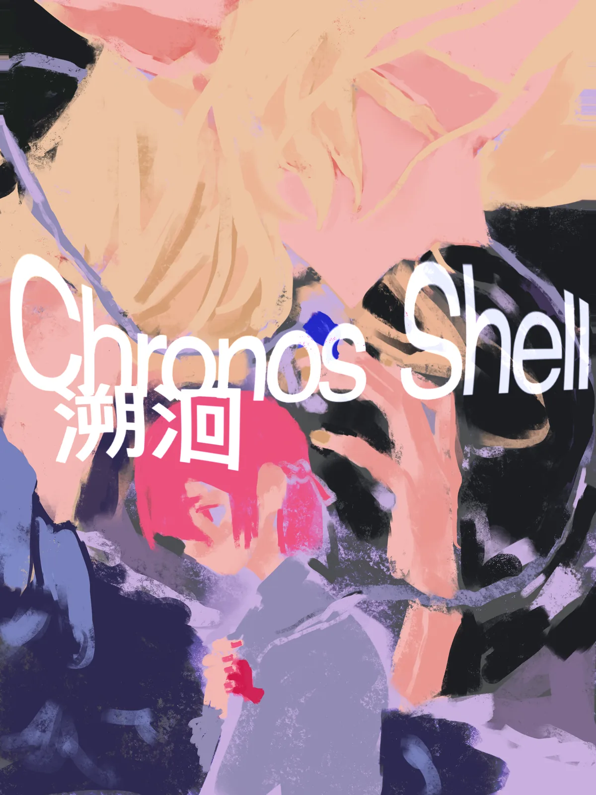

溯洄
「即使命运将我们撕裂、时间将我们重置……
爱和羁绊也会在灵魂深处回响，指引我们再次相遇。」

← → 或点击左右区域翻页 · 缩略图可跳转
创作者感言 From the Creators
森林
十分感谢你的阅读！不知道你是否喜欢这个故事？可以在评论区留下感受或建议~
我们漫画的画面完成度浮动颇大，三个人的画风也各不相同，为其对观感体验的负面影响而致歉><。
分工说明：
AyRM：封面封底，漫画正文 p2-4、p15-24、p30-38、p56-57，克洛琳人设图
森林：漫画正文 p5-14、p25-29、p39-42，剧情设计，西娅人设图
Rubisco：漫画正文 p43-55，莉芮尔人设图
估计眼力好的你差不多能通过画风区分出来我们，哈哈。
自己写剧情、设计任务、安排画面、分工等等确实不是小任务，我们花费了大量时间，总之得到了还说的过去的结果。
就这样了，再次感谢你~
AyRM
感谢观看！和朋友们一起完成的这个创作很有纪念意义（^ 。^）但其实好多地方画的还是不太满意（* . *）…….总之会坚持用画画表达一些无法直接言明的东西的（：、；）……（然后不知道shuo什么了……）
Rubisco
从前翻看各类漫画，只会沉浸在有趣的剧情里，单纯羡慕作者笔下好看的人物画风。真正参与课程动手创作之后，我才真切体会到画漫画远没有看上去那么轻松。起初我一味纠结线条是否流畅、人物造型够不够精致，总反复涂改草稿，常常画完一整页分格，又因为整体氛围不对劲全部推翻重画，好几次对着空白画框陷入创作瓶颈，心里难免觉得烦躁。
慢慢创作的过程中我渐渐醒悟，漫画的核心从来不是一味追求画面的完美。比起多样的画法，人物细微的神态、画面的留白处理、分格的叙事节奏，才是撑起整个故事的关键。我开始学着跳出对外表画风的执念，站在读者的角度编排画面，试着把脑海里零散的想法与情绪融进每一格画面之中。
一遍遍修改、打磨构思的过程虽然煎熬，但收获的成就感格外真切。这次课程创作让我明白，每一部完整的漫画作品，都是创作者反复斟酌、不断取舍的成果。我不仅练习了绘画技巧，也学会静下心耐心打磨作品，对漫画创作本身也有了更加深刻的理解。
鸣谢
在此谨向时雨墨原致以诚挚的感谢。她在本作品的创作过程中，尤其是在剧情构思与台词设计方面，给予了我许多宝贵的建议和极大的帮助。她是一位非常有才且热情的创作者。